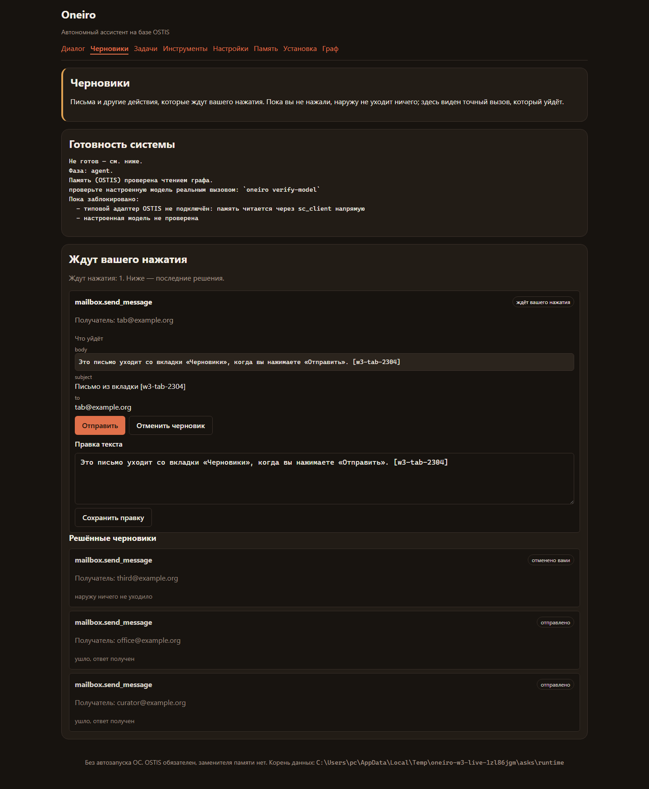
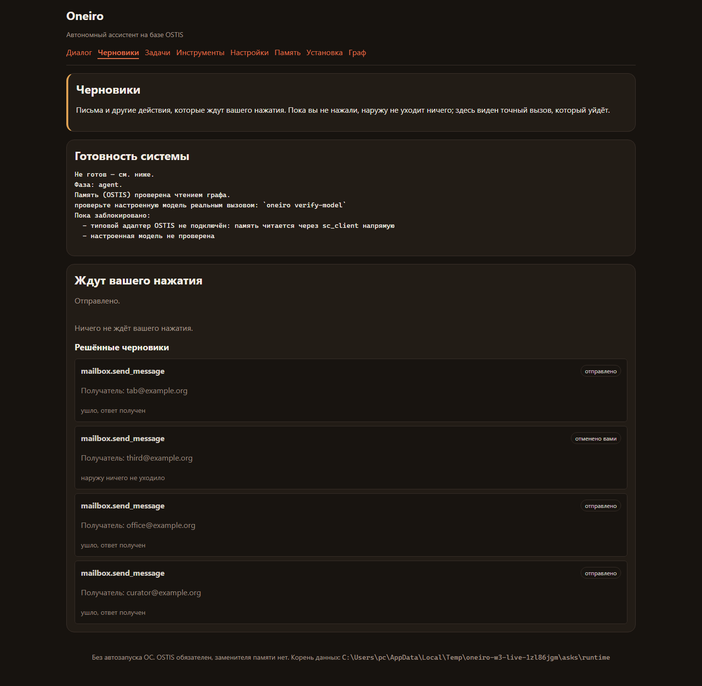

Кадры сняты проверкой python tests/live_drafts_check.py: она поднимает консоль
на своём порту, своим корнем данных и своим графом, пишет черновик и нажимает «Отправить»
на самой странице в настоящем браузере. Это и есть доказательство пункта O7 «черновик виден
во вкладке» и того, что наружу уходит ровно один вызов — тот, который показан на первом кадре.
Черновик ждёт, состояние названо словами каталога, виден точный вызов: получатель, тема и текст письма полностью.

Тот же черновик перешёл в решённые, состояние — «отправлено», а строка состояния говорит, что произошло. Список читается из графа заново, поэтому показано решение, а не память нажатия.
